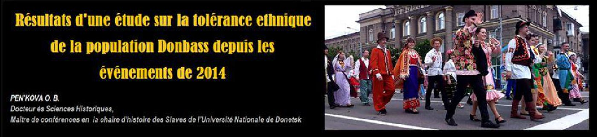
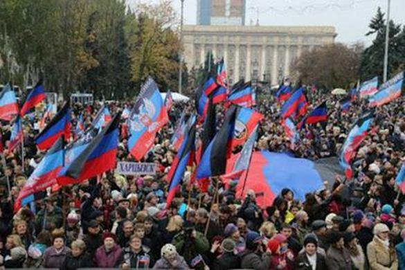
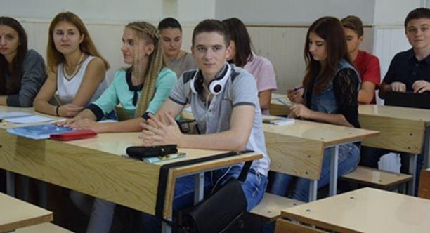

Résultats d’une étude sur la tolérance ethnique de la population Donbass depuis les événements de 2014
par PEN’KOVA O.B.

Les années 2014 et 2015 ont attiré l'attention de la communauté mondiale au Donbass. Les événements dans le Donbass ont forcé des historiens, des politologues, des sociologues, des ethnologues de s'intéresser de nouveau à l'étude de l'histoire de cette région, de ses spécificités, en particulier à l'étude de la population du Donbass, des particularités de sa formation, de sa culture et enfin à l'étude de son identité.
Il est bien connu que la région du Donbass est multinationale. Mais la multiethnicité en soi n’est pas une garantie de paix sociale et de tolérance. Dans l'histoire du monde il y a de nombreux exemples d'amitié et de coexistence pacifique de personnes d’ethnies différentes sur le même territoire, ainsi que des conflits ethniques violents pluriannuels.
Le but de notre petite étude consiste à déterminer le niveau de tolérance des habitants du Donbass.
Cette étude a été établie selon la base méthodique bien connue nommée « L’échelle de BOGARDUS », proposée par Emory S. BOGARDUS en 1925 pour l'étude de l’attitude des Américains blancs envers les Afro-Américains. BOGARDUS avait permis de déterminer la distance sociale par le degré de sympathie entre individus, entre un individu et des groupes sociaux, et entre groupes sociaux. Il a considéré la distance sociale comme un degré d'acceptation d'autres personnes, ou plus précisément, comme le degré de proximité accepté par les représentants d'un peuple. La distance sociale maximale signifie l’éloignement, la distanciation, l’insularité des membres d'un groupe à un autre, la répugnance des personnes à être en contact avec les représentants d'une autre ethnie et l’établissement de lignes de démarcation rigides entre eux. La distance sociale minimum favorise la mise en place d'un contact étroit avec un groupe ethnique et la meilleure connaissance avec les représentants de cette autre ethnie. D'autres études de relations ethniques dans les sociétés multiculturelles ont principalement été présentées par l’étude des attitudes de la majorité ethnique dominante envers les minorités. Les chercheurs modernes utilisent cette méthode pour déterminer la distance sociale entre les représentants de divers groupes ethniques et la xénophobie.
Dans notre étude ethnosociologique non représentative, une version de cette échelle, adaptée par les chercheurs Valentina PAVLENKO et Sergueï TAGLINE, a été sélectionnée. Partant de l'idée que le rôle social reflète les relations sociales les plus significatives et varie selon l’appartenance des sondés aux différents groupes ethniques, l'éventail suivant a été proposé aux participants de l'enquête :
époux/épouse,
membre de la famille,
ami/amie,
condisciple/collègue,
spécialiste (enseignant, médecin, juriste),
voisin,
habitant de mon arrondissement, de ma ville,
dirigeant de l’entreprise,
dirigeant local.
En cas d'acceptation de la personne d'une ethnie différente, un interrogé a mis « + » dans cette case. Le nombre de réponses négatives (un rejet de la personne d'une ethnie différentes) a ainsi permis de déterminer le niveau de distance sociale. L’enquête était anonyme. Il était toutefois nécessaire de préciser : si l’ interrogé était un habitant urbain ou rural, en lui proposant indiquer sa ville, son village ou son domaine. Au début du questionnaire un sondé devait définir son origine ethnique. Cela a permis à de nombreux sondés de mesurer leur origine bi-ethnique (par exemple, Ukrainien, mais de mère est arménienne ou russe), ou multiethnique (par exemple russe, mais avec des racines grecques, polonaises ou juives), ou encore un mélange « russo-ukrainien-polonais-tatar »....
L'enquête a été réalisée auprès des étudiants de différentes facultés de l’Université Nationale de Donetsk de 2002 à 2015. Les documents d'enquête ont fait l’objet d’un travail d’interprétation et d'analyse détaillés.
Mais les résultats préliminaires de l'étude ont déjà montré un niveau significativement plus élevé de tolérance ethnique des habitants de notre région en comparaison avec celui ukrainien (sur la période 1994-2004), qui a été présenté par Vladimir SERGUEYEV dans son article « La distance sociale et les attitudes nationales », publié dans la revue scientifique « Télescope : le magazine de recherches sociologiques et de mercatiques ».
Ainsi, dans notre étude, 40 à 75 % des sondés dans chacun des différents groupes d'étudiants se définissaient comme les représentants non d’une ethnicité, mais de deux ou plus. Il apparaît alors qu’une très grande partie de la jeunesse du Donbass est issue de mariages interethniques des générations précédentes. Maintenant, de nombreux habitants de la région ont une conscience vigoureuse de leurs racines ethniques.
Le niveau de distance entre les Russes et les Ukrainiens est extrêmement faible (0 à 2). Tel niveau correspond pour plus de 90 % des interrogés (dans de nombreux groupes d'étudiants – 100 %). Les sociologues kiéviens Vladimir PANIOTTO et Natalia PANINA ont mis en décriés, sous couvert de travaux scientifiques, « l'intolérance slave » - un rejet entre les représentants de peuples slaves de l'Est. Comme nous avons pu le voir précédemment si l'indice de distance nationale est de moins de 4 points, on peut parler de tolérance. Ainsi, pour les représentants de ce peuple dans le paradigme de la distanciation sociale, ces résultats sont interprétés comme étant « des nôtres ». Les documents de notre enquête montrent que les Ukrainiens, les Russes et les Biélorusses dans le Donbass ne se perçoivent pas les uns aux autres comme des représentants d'une autre ethnicité, en tout cas dans la vie courante. En cela, dans une enquête relative aux mariages russo-ukrainiens (ainsi que les mariages russo-biélorusses et biélorusse-ukrainiens), ceux-ci ne se définissent pas comme interethniques. Pour comparaison, selon PANIOTTO et PANINA, l'indice de distance sociale en Ukraine en 2004 par rapport aux Ukrainiens était de 2.2 points, aux Russes - 3.1, aux Bélarusses - 3.4. En 2004, le niveau moyen de « l'intolérance slave », selon les deux scientifiques de Kiev, était alors de 2.57 points en Ukraine. Or, pour les étudiants de l’Université Nationale de Donetsk (selon les données de notre étude), le niveau de « l'intolérance slave » est en réalité de 1.1 points.
Des représentants d'autres peuples slaves (Serbes, Bulgares, Croates, Polonais, Tchèques et Slovaques) sont aussi perçus très positivement avec une distance de 2,4 points. Mais le niveau de « l'intolérance non-slave » est significativement plus bas que celui obtenu par l’étude ukrainienne, définie, toujours en 2004, à 4.98 points. Pour notre région cet indicateur apparaît avec une moyenne de 3 points. Le niveau de distance par rapport aux peuples non-slaves se varie ainsi de 2 à 5 points selon les peuples concernés : les Grecs, les Allemands, les Arméniens, les Géorgiens, les Moldaves, les Tatars, les Juifs, les Azerbaïdjanais, les Coréens, les Tsiganes et les autres...
Le rejet de représentants d'une communauté ethnique est fixé à 6 points, et la xénophobie est définie à partir de 7 points sur l'échelle de distance sociale. Aucun des peuples indiqués dans le questionnaire dans le cadre de notre étude n'a obtenu de tels points. Les Arabes, les Chinois, les Vietnamiens, les Africains, les peuples du Caucase du Nord (les Tchétchènes, les Ossètes, les Abkhazes), les Américains, les Français, les Espagnols, les Italiens, les Suédois et d’autres ont aussi été présentés dans l’enquête. Le niveau de distance par rapport aux gens de telles ethnicités se situait entre 3 et 5 points.
Les facteurs socio-économiques et politiques, formant la population de notre région, sont à l’origine d’un très haut niveau de tolérance ethnique. Le Donbass est une région prolétarienne. C’est précisément cet environnement social qui a formé une image internationale de notre région. À la fin du XVIIIe – au début du XXe siècle, les représentants des différents peuples du Priazovié de Nord et du Podontsovié demeurèrent sur le même territoire. Des liens économiques et sociaux forts se développèrent entre eux. Après l'abolition du servage, une grande vague de population russe vint dans la région. Ensuite la Révolution d'Octobre et la Guerre civile changèrent la situation. Sous l'influence d'un nouvel ordre social, les anciennes barrières s'écroulèrent, le mode de vie changea radicalement. Les mariages entre personnes d’origines ethniques différentes devinrent courants et cohérents avec la stratégie du parti soviétique. Cela entraîna la création d’une nouvelle population plus ouvertes aux cultures internationales. Tout au long du XXe siècle, une communauté interethnique stable, parlant le russe, avec un système de valeurs commun, des particularités culturelles, une conscience régionale vigoureuse de soi, une identité et une tolérance ethnique et religieuse stable se développa dans le Donbass. Malgré les événements de 2014-2015 et la peine de toute une population, n’ont pas considérablement pas influé sur les relations entre les Russes et les Ukrainiens. Les données de l’enquête, réalisée parmi les étudiants de l’Université Nationale de Donetsk déjà dans les années de guerre (l'automne 2014, le printemps-l'automne 2015), ont confirmé un haut niveau de tolérance ethnique entre les Russes et les Ukrainiens du Donbass.
Partager cette page